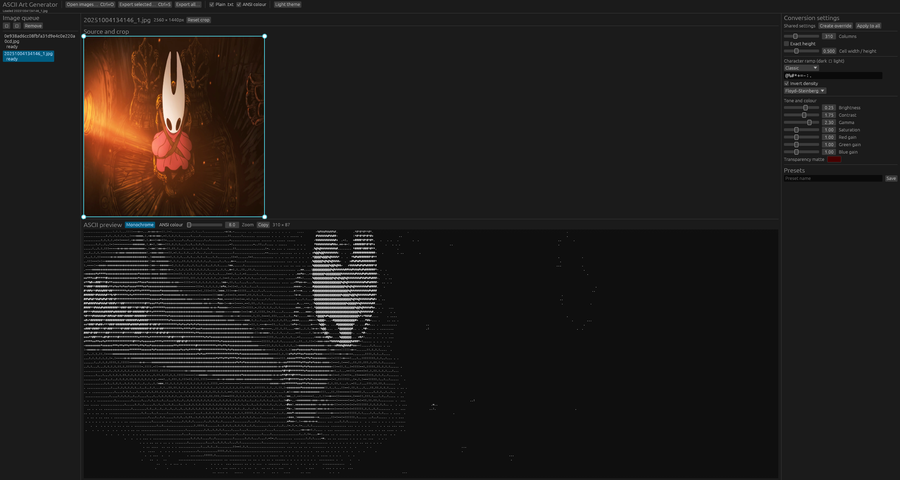
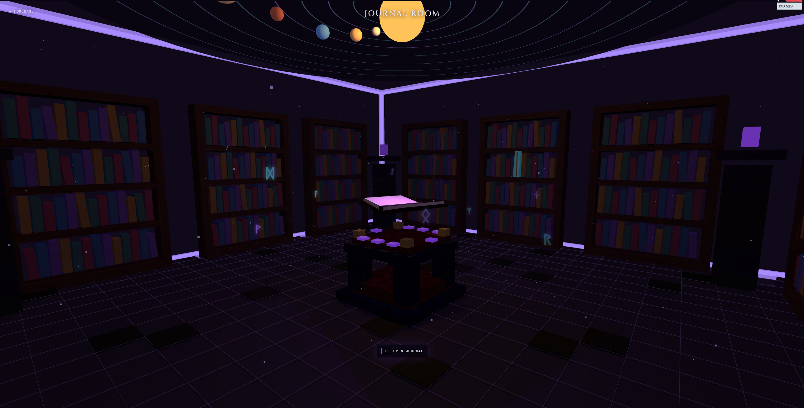
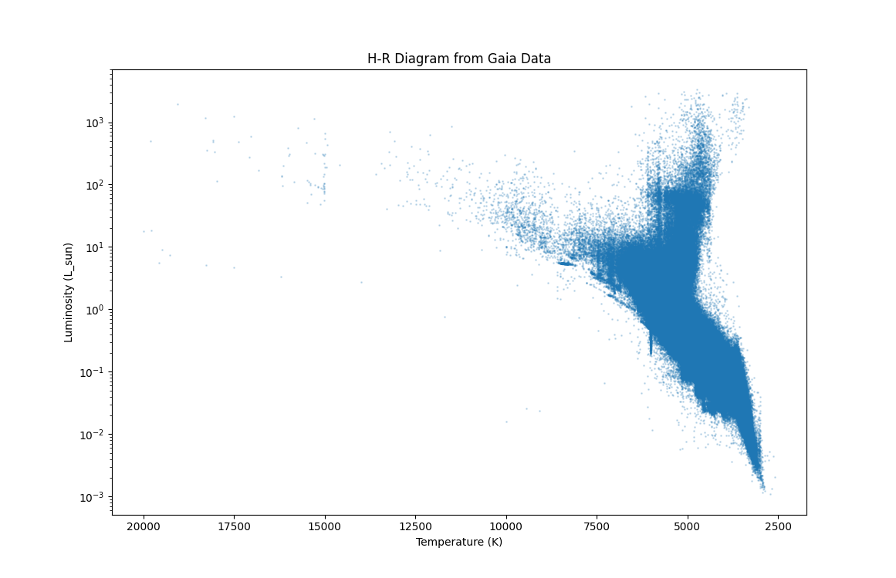
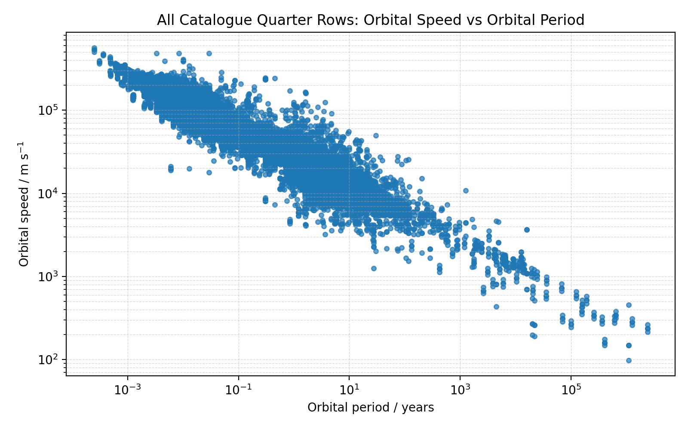
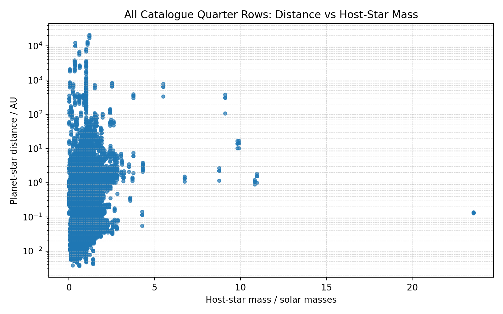
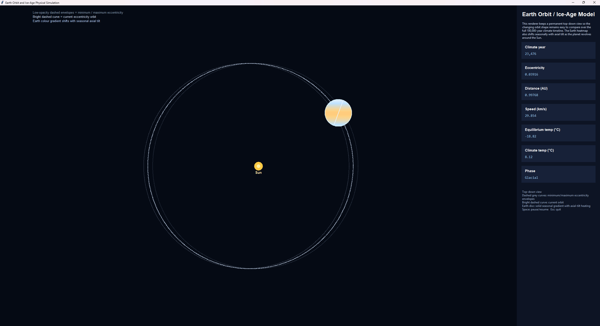
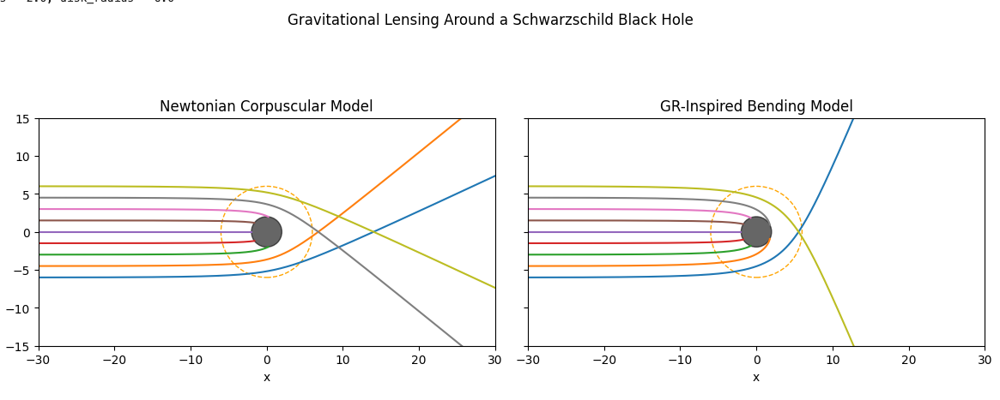
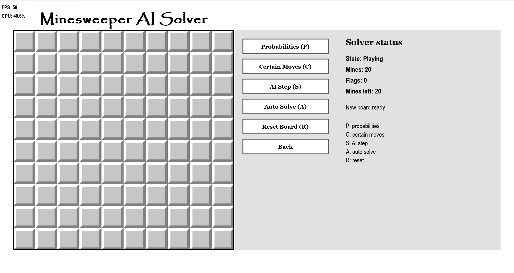

Projects
Look on projects, ye mighty, and despair.
Webstronomy (C#) - Long Term Project Pre-Alpha
Currently in development, a part of my learning process to make a video game using Godot!
Spears — Terraria Content Mod (C#)
A Terraria content mod for that adds ten new weapons based on the popular and greatest weapon, the daybreak. Some spears can lodge in an enemy, deal fixed damage over time, and detonate when it expires, they are all unique in their abilities!

Macro Recorder (Python)
A small local desktop macro recorder inspired by TinyTask, but it includes the feature to pause and resume the recording. It records mouse movement, clicks, scrolling, and keyboard press-and-release timing only while recording is enabled, then replays the sequence a chosen number of times or until it is paused or stopped.
Recordings stay on the user's computer and can be saved to or loaded from human-readable JSON. The application does not auto-start, hide itself, transmit data, or record while idle.
ASCII Art Generator (Rust / WebAssembly)
A cross-platform Rust desktop editor that turns images into adjustable monochrome ASCII or 24-bit ANSI-colour text. It includes cropping, tone controls, dithering, live previews, image queues, presets, and batch exports.
The same Rust conversion engine also powers a browser version through WebAssembly. Images are processed locally and can be copied or downloaded as text without being uploaded.

Museum Donation Tooltip | Hypixel SkyBlock (Java)
MuseumDonationTooltip is a small client-side Fabric mod for Hypixel SkyBlock. When you hover over an item, it adds a line showing whether that item type has already been donated to your Museum.
You will see one of these messages:
- Museum: Donated
- Museum: Not Donated
- Museum: Unknown / API unavailable
The mod checks the general item type, not the exact copy in your inventory. For example, donating one Aspect of the End means every Aspect of the End you hover over will be shown as donated. Reforges, enchantments, stars, recombobulation, rarity upgrades, and item UUIDs do not change the result.
Items that cannot be donated to the Museum do not receive a Museum tooltip line.
Journal Room Voxel and Shader Engine (JS)
A custom interactive 3D environment built for the Journal page using Three.js. The room is assembled from voxel-style geometry and rendered with shader-driven materials, dynamic lighting, soft shadows, fog, glowing runes, and drifting particles.
The scene includes an animated model solar system across the ceiling, bookshelves surrounding an enchantment table, procedural pixel textures, and raycast interactions that allow visitors to open the journal and guestbook from inside the room.

H-R Diagram from the ESA Gaia Archive DR3 data release
This is one the first personal projects I did ever since starting the summer holidays, I made it using Python and plotted using matplotlib for python, additionally the data collected was 1 million stars which was queried using ADQL (Astronomical Data Query Language) which is similar to SQL.
Below is the finished project image of the million stars made into a diagram similar to a H-R diagram, if compared to a graph which is typically seen online, there is usually a lack of white dwarfs this is mainly due to the amount of stars in the universe that we have detected so far to not have as many relative to regular stars in the main sequence/giant stars.

Exoplanet orbital temperatures and modelling eccentricity using training data
An algorithm using NASA exoplanet archive data and how exoplanets orbit their host stars and a predicted variness in orbital positions. This isn't an accurate depiction of their orbits, if you were to apply the same logical rules onto earth they would be different to the real eccentricity of the Earth, this is due to the various factors and events that made the Earth the planet it is today, most notably before it was the 'Earth' it was a protoplanet that had a collision with another protoplanet which is theorised to have created the moon, this event would have changed the eccentricity of the Earth and thus the algorithm would not be able to predict the eccentricity of the Earth accurately.
The temperatures of the planets are calculated using the Stefan-Boltzmann law, which describes the power radiated from a black body in terms of its temperature. The formula is: P = σ × A × T4, where P is the total power radiated, σ is the Stefan-Boltzmann constant, A is the surface area of the black body, and T is the absolute temperature of the black body. In this project, I use this formula to calculate the equilibrium temperature of exoplanets based on their distance from their host star and the luminosity of the star.


Earth Orbit and Ice-Age Physical Simulation (Python)
An educational Python and Tkinter simulation of Earth's changing orbit and long-term glacial cycle. It visualises eccentricity, orbital distance, speed, equilibrium temperature, and idealised axial-tilt heating across a 100,000-year run.
The model uses Kepler's equation and the vis-viva equation, classifies glacial and interglacial phases, and exports its generated time series to CSV and XLSX. It is intended as a visual approximation rather than a research-grade palaeoclimate model.

Black Hole Model (Jupyter Notebook)
Testing how light works using two methods of physics interpretations, Newtonian and Gravitational Lensing, as black holes break physics at the smallest and most complex levels, the way light works is different. The Newtonian method is traditional methods using newtonian mechanics and the gravitational lensing method is using the bending of light around a massive object to determine how light would work around a black hole. The results are quite interesting as the gravitational lensing method shows that light can actually escape the black hole and thus we can see the light that is emitted from the accretion disk around the black hole, this is something that is not possible with the newtonian method as it does not take into account the bending of light around the black hole.
The equations for each method are as follows: For the Newtonian method, the equation is given by: F = G × (m1 × m2) / r2, where F is the force of gravity, G is the gravitational constant, m1 and m2 are the masses of the two objects, and r is the distance between the two objects. For the gravitational lensing method, the equation is given by: θ = (4 × G × M) / (c2 × b), where θ is the deflection angle of light, G is the gravitational constant, M is the mass of the black hole, c is the speed of light, and b is the impact parameter (the closest distance between the light ray and the black hole).

Minesweeper Algorithm (Python)
Created in 2025 for my A level computer science coursework.
First algorithmic project, it uses an iterative technique on each unrevealed cell and calculates the probability of there being a mine on that cell based on the number of mines left and the number of unrevealed cells, it then selects the cell with the lowest probability of being a mine and reveals it, this process is repeated until all cells are revealed or a mine is hit.
There are cases where it is impossible to mathmateically determine which cell is a mine and which cell is not, in these cases the algorithm will select a random cell from the remaining unrevealed cells and reveal it, this is not an optimal solution but it is a scenario that needs to be considered. More complicated techniques have been taught to the AI, such as common patterns to quickly identify mines and safe cells. Using heuristics and probability to solve the minesweeper game.
